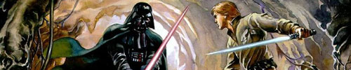

The tales of the warrior and the “idiot”

Once upon a time, in a land far, far away, where magical phenomena such as low priced flat pack furniture, luxurious meatballs and faster than light internet connections existed, the dancing queens wandered throughout the kingdom bringing peace and harmony to all those who were lucky enough to inhabit these miraculous lands. It was not long however, before an evil foreigner who went by the name of ParadokS, had invaded this mysterious place, casting a dark shadow over the land.
Chaos and mayhem spread everywhere. “Who will dare stand up to this wicked creature?” asked the poor and the innocent. But these were hard times as their last leader, King Sassa of the Suger Valleys, had become weak and eventually had to give up the thrown, leaving the people leaderless and divided. Long continuous debates and pointless political struggles took place, but led nowhere. As a last resort, a desperate cry for help was sent throughout the globe.
Fortunately, this distress call found its way to a savior. This messiah was none other than Saint Philip, a notorious proponent who was living in the land of the free. Philip was raised upon high values of independence, freedom and unhealthy food. When Philip heard the liberty of the muscular blond haired wonderland was at stake, he immediately took charge. Philip announced that a duel tournament must be held in order to decide the fate of the land. According to him: “The tournament will consist of eight deathmatch rounds, all of which will be held within the boundaries of The Dark Zone. The last man standing shall be declared the undisputed king and ruler of all grounds.”
Great warriors all over the country stepped up for the challenge, but failed measurably as they were no match for the malicious ParadokS. Eventually it all came down to one of two men. The first was the legendary bonde champion, also known as the Mighty Griffin, who has made it all the way from the woods of wilderness. Griffin had years of excessive training behind him and was the only warrior ever to possess the sixth sense - ‘bondeskill’. His current fighting shape however, was at question. Against him stood Cage, an urban fighter arriving from much more civilized districts, yet he was mysterious and unknown to the wide public. Cage represented a new and younger generation of duelers. His combat methods were based on a more modern, patient and tactical warfare, also known to others as the nerve-racking art of Counter-Strike.
Cage and Griffin had to face each other first, as only one of them could be given a chance to go up against the despicable ParadokS and save the kingdom from eternal doom. Thousands of anxious witnesses from all around the world gathered to behold this final test. It was then that the unexpected of all has happened. The mythical Griffin refused to compete with Cage and retired from the tournament. It is unnecessary to say, that a deep feeling of disappointment filled the hearts of the raging masses as they were looking for blood.
Griffin was short with his words and explained that he does not battle “idiots” and “lame” beings such as cage. When asked for clarification about these rather bold statements, Griffin was once again brief: “I thought everybody knew he is” (an idiot). Griffin added later on that there are “various reasons” for his usage of such outrageous derogatory names which are “too numerous to bring up”, as a little smile appeared on his face.
Cage on the other hand, claimed that he had no prior contact with Griffin whatsoever, with the exception of a few friendly duel and tag team matches that were held a few years before. Cage suggested however, that Griffin might not be so fond of his techniques, which as mentioned above, revolve around the irritating arts of the Counter-Strikers union.
Was Griffin afraid of Cage? In what ways were Griffin and Cage involved before this tournament? Did Cage molest Stewie and bring shame to the house of the Griffins? Could Cage successfully use his GL camp strategies against Griffin? Who would be victorious if the match was held? Will Griffin ever compete in an official tournament again?
Unfortunately, all these questions and more will remain a mystery to us all.
Damn, i was looking forward to some real facts and drama.. not a tale :(